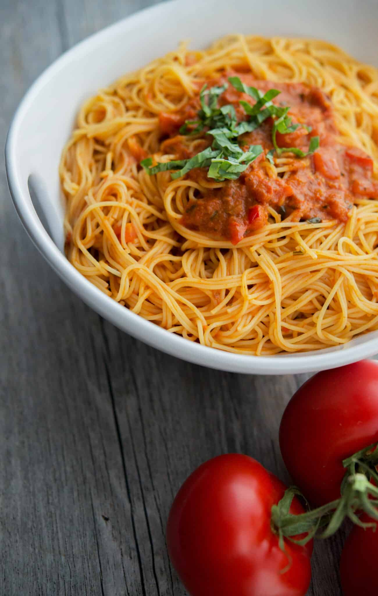

Return
Angel hair pasta
Taste of Italy

Ingredients
Angel hair noodles
Broccoli
Sliced baby bella mushrooms
Apple and sage Field Roast sausage, sliced
Canned crushed tomato
Chopped Green onions
Minced garlic
Olive oil
Salt
Pepper
Thyme
Garlic powder
Italian seasoning
Sugar
Red pepper flakes
What could be better than an evening with pasta? This classic dish is guaranteed to make for a filling and pleasing dining
experience. At the table with you is a robust tomato sauce, fresh steamed broccoli, thyme honored mushrooms and a hearty
helping of plant based protein.
Instructions
- Boil two pots of water, heat one pot and one large pan with olive oil
- When pots are boiling, add noodles in one, and broccoli to another
- Season broccoli with salt and pepper
- While the noodles and broccoli are cooking, place onions and garlic in the pot with oil, and place sausages into the pan
- Once garlic and onion are starting to brown, add in the canned crushed tomato, as well as seasonings (except thyme) and sugar; stir
- Once sausage has cooked fairly well on one side, add in mushrooms to the pan
- Season the mushrooms with salt, pepper and thyme
- When everything is cooked, assemble together in a bowl
Tips
Make sure to add salt to the pot in which you boil the noodles
The secret is in the sauce! Feel free to experiment with different seasonings
When the sauce starts bubbling, make sure to turn the heat off!
It's a good idea to wash the noodles with cold water after they're done cooking